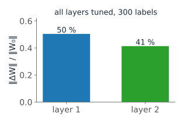
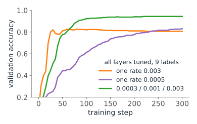
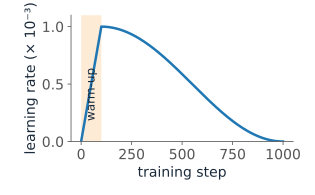
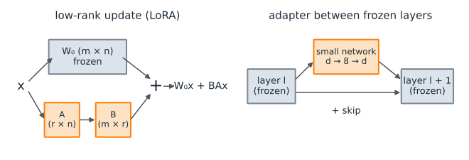
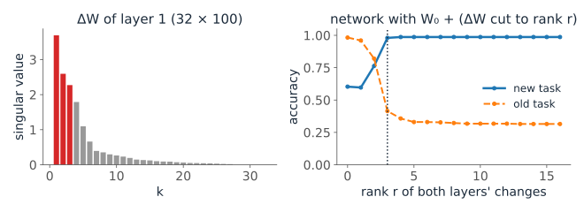

With 9 labels, tuning all layers at the usual rate overfits (81 % against 97 % for the frozen probe).
And whatever the number of labels, the tuned backbone forgets the old task: from 98 % to about a third.
Forgetting matters when one network should do both, and as a warning sign: the general features are being overwritten.
Freeze the early layers
The early layers are the most general (edges, blobs) and the most expensive (most weights in the toy: 3232 of 3811).
Freezing them: fewer weights to fit, nothing to forget there, and their outputs can be computed once.
When all layers are tuned (300 labels), layer 1 moves by 50 % of its size and layer 2 by 41 %: the change is not small, and with few labels much of it fits noise.
In practice: tune the head first, then unfreeze from the top down while the validation score improves (“gradual unfreezing”).

One learning rate per layer
A new head starts from random weights: it needs large steps. The pretrained layers are already good: they need small steps.
One rate for all is a compromise that fails both ways (9 labels, all layers tuned):
0.003 for all: 80.7 %, old task 35 %;
0.0005 for all: 83.0 %, but a frozen probe at this rate learns too slowly (59 %);
0.0003 / 0.001 / 0.003 for layer 1 / 2 / head: 94.3 %, old task 68 %.
“Discriminative” or layer-wise learning rates: smaller towards the input.

Warm-up
At the start the new head is random, so the gradients that reach the pretrained layers are large and meaningless: big early steps can wreck the pretrained features before the head has learnt anything.
Warm-up: start with a tiny learning rate and raise it over the first few hundred steps; then let it decay.
A cheap variant of the same idea: train only the head first, then unfreeze.
Optimisers with running averages (Adam) also need a few steps before their averages mean anything (the training day).

The math: per-layer rates and warm-up
Layer l with weights W_l, gradient G_l, base rate \eta, a factor \gamma < 1 per layer below the head (L = the head):
With Adam each weight’s step is roughly \eta whatever the size of its gradient: scaling the gradient does not slow a layer down; the per-layer rate must be in the update.
A frozen layer is the limit \gamma^{L-l}\eta = 0.
Catastrophic forgetting
Training on the new task moves every weight towards what the new task needs; nothing in the loss asks the old task to stay right.
Freeze what must not change (or keep a frozen copy of the old network).
Small or layer-wise rates: 35 % → 68 % of the old task kept in the toy.
Pull towards the start: add \lambda\|\mathbf w - \mathbf w_0\|^2 to the loss (weight decay towards the pretrained weights instead of towards 0).
Rehearsal: mix some old-task examples into every batch.
Leave the weights alone: train small extra parts (adapters, low-rank updates); the original network stays intact and can be switched back.
The same as ordinary weight decay, centred on \mathbf w_0 instead of 0: a Gaussian prior around the pretrained weights (maximum a posteriori).
Near \mathbf w_0 the old-task loss is a bowl, \mathcal L_\text{old}(\mathbf w) \approx \mathcal L_\text{old}(\mathbf w_0) + \tfrac12(\mathbf w - \mathbf w_0)^\top H(\mathbf w - \mathbf w_0). Weighting each direction by its curvature H (estimated by the Fisher information) protects the weights the old task needs most: “elastic weight consolidation”.
The head has no pretrained weights: it is not pulled.
Changing a network with few new numbers

Low-rank update (LoRA): keep W_0 frozen and learn \Delta W = BA, with Bm \times r and Ar \times n, rank r small (1 to 16).
Adapters: small bottleneck networks inserted between frozen layers; start as “do nothing” (the skip connection).
Both store a few percent of the weights per task; one base network serves many tasks.
The math: counting the numbers
A weight matrix W \in \mathbb R^{m \times n}:
\text{full update: } mn, \qquad \Delta W = BA,\ B \in \mathbb R^{m \times r},\ A \in \mathbb R^{r \times n}: \ r(m + n)
BA has rank at most r: it can only change W along r input directions (the rows of A) and write into r output directions (the columns of B).
Start: B = 0 (so \Delta W = 0 and training starts at the pretrained network), A random.
Why a low rank is enough

The change of layer 1 has a few large singular values and a long small tail.
Keeping only 3 directions per layer gives 98.0 % (the full change: 98.7 %). The rest of the change hardly matters for the new task.
The math: the best rank-r change
Singular value decomposition \Delta W = \sum_k \sigma_k \mathbf u_k\mathbf v_k^\top, \sigma_1 \ge \sigma_2 \ge \dots \ge 0.
Eckart–Young: the best rank-r approximation (in \|\cdot\|_F) keeps the r largest terms; its relative error is \sqrt{\sum_{k > r}\sigma_k^2 / \sum_k \sigma_k^2}. Toy layer 1, r = 3: 42 %.
Why are fine-tuning changes low rank? One gradient of a layer is a sum of outer products, G = \sum_n \boldsymbol\delta_n\mathbf a_n^\top; when a few directions of \boldsymbol\delta (here 3 classes) and of the inputs dominate, G and their sum over steps have few large singular values.
Training B and A by gradient descent on \|BA - \Delta W\|^2 reaches the Eckart–Young error (it has no bad local minima), but slowly in the directions with small \sigma_k.
Try it: a change and its low-rank approximation
Tuning only a decoder, or a prompt
Promptable networks have a heavy encoder (run once per image) and a light decoder (run per prompt): SAM on the cell-networks day.
Fine-tune only the decoder on your annotated cells: a few million weights instead of hundreds of millions; the image embeddings can even be computed once and stored, as for a frozen probe.
Prompt tuning: freeze everything and learn a few extra input tokens (for a transformer: “virtual patches”) that steer the network.
Cellpose’s human-in-the-loop training fine-tunes its whole (small) network on a few images you correct: the next unit.
A low-rank update as pseudocode
given: W0 (m × n, frozen), rank r
A = small random numbers (r × n); B = 0 (m × r) # so B·A = 0 at the start
forward: y = W0 · x + B · (A · x) # never form B·A
backward: with g = ∂loss/∂y:
grad B = g · (A·x)ᵀ, grad A = Bᵀ · g · xᵀ # W0 gets no gradient
update B and A with the optimiser
after training: W = W0 + B·A (one matrix again, no extra cost)
Only B and A are stored per task; switching task = switching B, A.
The coding exercise fits BA to a real fine-tuning change by gradient descent and compares with the best possible error.
Choosing a strategy
situation
strategy
tens of labels
frozen backbone + head; at most the last layers
hundreds of labels, similar images
gradual unfreezing, layer-wise rates, warm-up, early stopping
the old task must keep working
frozen copy, pull to the start, rehearsal, or adapters / LoRA
many tasks on one base network
adapters or LoRA: a few % of the weights per task
a promptable network
fine-tune the decoder only
very different images, many labels
all layers, a normal rate
Whatever you choose: choose it on a validation set and report on a separate test set.
Summary
Idea
In one line
Freezing
early layers are general and expensive: keep them fixed, compute once
Layer-wise rates
small steps for pretrained layers, large for the new head (toy: 81 % → 94 %)
Warm-up
tiny steps while the new head is random, then decay
Catastrophic forgetting
the old task is lost; freeze, pull to \mathbf w_0, rehearse, or add parameters
LoRA
\Delta W = BA of rank r: r(m+n) numbers instead of mn
Low rank suffices
fine-tuning changes have a few large singular values (toy: rank 3 gives 98.0 % of 98.7 %)
Next: few labels: which images to annotate, and the human in the loop.